<mat-sidenav-container fullscreen>
    <mat-toolbar color="primary">
    <mat-toolbar-row>
        <button mat-icon-button class="logo"  [routerLink]="[ '/']">
            
        </button>
            <span class="example-spacer"></span>
            <mat-icon class="example-icon" aria-hidden="false" aria-label="Example heart icon">favorite</mat-icon>
            <mat-icon class="example-icon" aria-hidden="false" aria-label="Example delete icon">delete</mat-icon>
    </mat-toolbar-row>
  </mat-toolbar>
</mat-sidenav-container>
